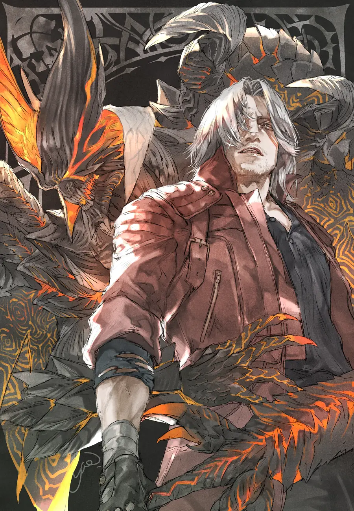
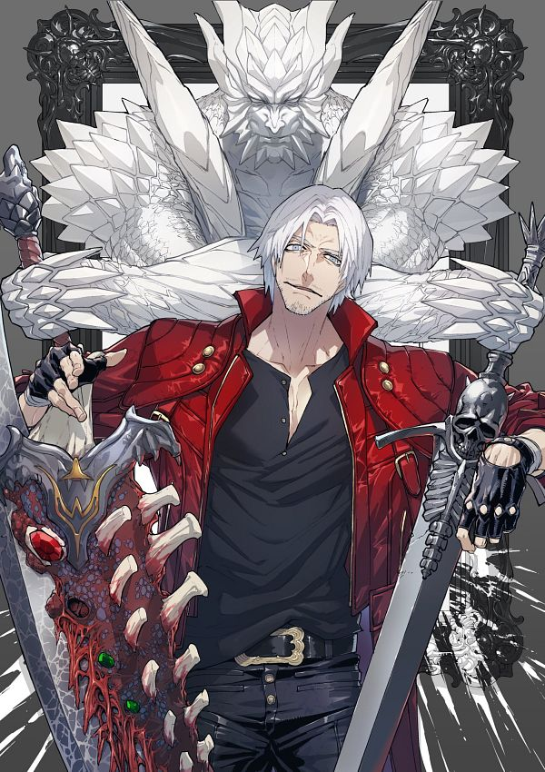
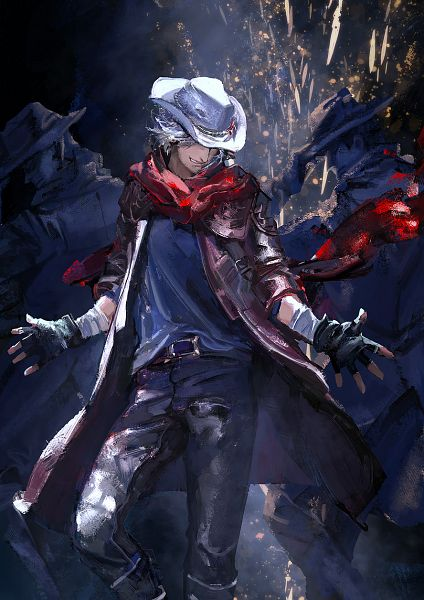
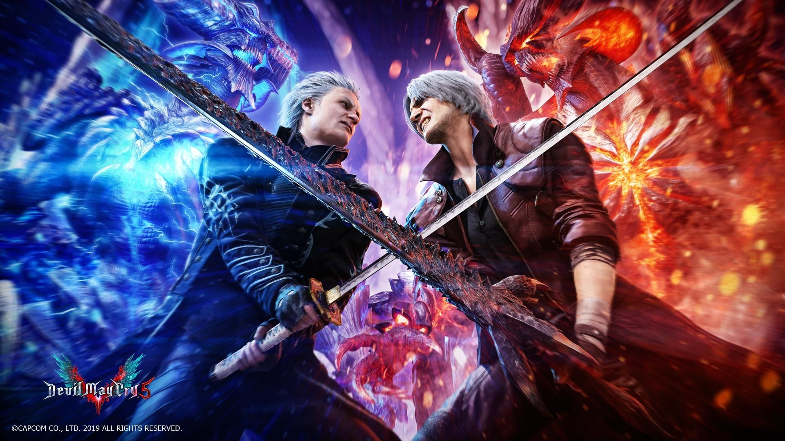

Dante Sparda, the protagonist of the Devil May Cry series by Capcom, is one of gaming's most iconic and charismatic characters. Known for his devil-may-care attitude, unparalleled combat prowess, and sharp wit, Dante is a demon hunter and the son of Sparda, a legendary demon knight, and Eva, a human woman. His lineage makes him a half-demon, granting him extraordinary abilities that he uses to battle supernatural threats and maintain the balance between the human and demonic realms.

Background and Personality
Dante’s character is deeply rooted in the legacy of his father, Sparda, who rebelled against his own kind to protect humanity. Inspired by Sparda’s heroism, Dante takes on the role of a protector, albeit in his own unique way. He runs a demon-hunting business, often named Devil May Cry, where he takes on contracts to eliminate demonic threats. Despite his flippant demeanor, Dante harbors a deep sense of responsibility and a strong moral compass, driven by the loss of his mother and the corruption of his brother, Vergil.
Dante's personality is a mix of cocky humor and unshakable confidence. He frequently taunts his enemies with sarcastic quips, showcasing a fearless attitude even in the direst situations. However, beneath his bravado lies a character shaped by tragedy and a longing for family. His rivalry with Vergil, his twin brother, is a central theme in the series, representing the dichotomy between power-driven ambition and the will to protect.

Abilities and Combat Style
Dante's combat style is a blend of swordsmanship, gunplay, and acrobatics, making him one of the most versatile characters in action gaming. His weapon of choice is Rebellion, a powerful sword that symbolizes his connection to Sparda. He also wields dual pistols, Ebony and Ivory, which he uses to execute stylish, long-range attacks.
A signature feature of Dante's abilities is his Devil Trigger, a transformation that unleashes his demonic power. In this state, Dante gains enhanced strength, speed, and regenerative abilities, allowing him to turn the tide of battle. Over the series, Dante has wielded a wide array of weapons, each with unique abilities, including demonic gauntlets, magical guitars, and even rocket launchers.

Role in the Series
Dante's journey spans multiple games, with his character evolving over time. In the original Devil May Cry, he confronts Mundus, the demon who orchestrated his mother’s death. In Devil May Cry 3, a prequel, Dante’s origin story is explored, showcasing his transformation from a reckless youth to a determined demon hunter. The game also delves deeply into his tumultuous relationship with Vergil.
In later installments, such as Devil May Cry 4 and Devil May Cry 5, Dante serves as both a mentor and a seasoned warrior, facing new threats while guiding younger characters like Nero. His enduring appeal lies in his balance of playful charm and fierce determination, making him a timeless figure in gaming.

Legacy
Dante’s impact on gaming culture is immense. His stylish combat mechanics set a standard for action games, and his personality has made him a fan favorite. With his mix of humor, heroism, and swagger, Dante Sparda continues to be celebrated as one of the most beloved characters in the world of video games.